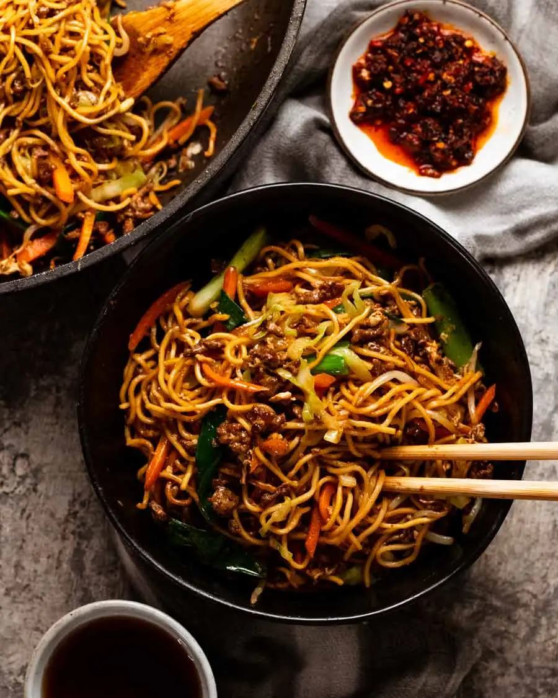

Chow Mein

Description
Here’s a great beef mince recipe for you that’s quick to make, economical and full of hidden vegetables so it’s a complete meal – Beef Chow Mein! It’s the beef version of everybody’s favourite Chicken Chow Mein, made with the convenience of ground beef.
Ingredients
CHOW MEIN:
- 200g/ 7 oz chow mein noodles
- ▢1 1/2 tbsp canola oil
- 2 garlic cloves
- 200g/ 7 oz beef mince / ground beef
- 3 green onion stems
- 1 egg
- 2 cups green cabbage
- 1 carrot
- 1 heaped cups bean sprouts
CHOW MEIN SAUCE:
- 1 1/2 tbsp light soy sauce
- 1 1/2 tsp dark soy sauce
- 1 1/2 tbsp oyster sauce
- 1 1/2 tbsp Chinese cooking wine
- 1 1/2 tsp white sugar
- Pinch white pepper
SAUCE THICKENER:
- 1 1/2 tsp cornflour / cornstarch
- 3 tbsp water
Steps
- Sauce – Mix ingredients in a small bowl then set aside. Some is used to flavour the beef, then the rest for the noodles.
- Sauce thickener (cornflour slurry) – Mix the cornflour / cornstarch and water in a separate small bowl.
- Prepare noodles per packet directions then drain.
- Cook beef – Heat the oil in a large non-stick pan over high heat. Cook garlic for 10 seconds, then add the beef and cook until you can no longer see pink. Add 1 1/2 tablespoons of the Sauce and the white part of the green onions. Cook for another 2 minutes to get the beef nicely caramelised.
- Finish sauce – Mix the cornflour slurry into the remaining sauce.
- Egg – Add the egg into the pan then mix it through the beef, it will sort of scramble. Egg makes the beef stick to the noodles better!
- Cabbage & carrot – When the egg is mostly cooked, add the carrot and cabbage. Cook for 1 minute until cabbage starts to wilt.
- Sauce & noodles – Give the sauce a quick mix. Add the bean sprouts, noodles and sauce into the pan. Toss well for 1 minute or until sauce is dispersed through the noodles. Add green part of green onions. Toss for another 1 minute.
- Serve – Divide between bowls and serve!